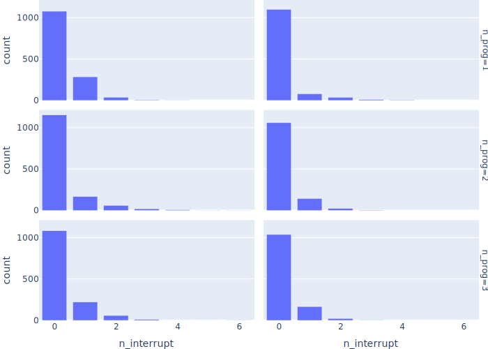

Interruptions
Throwing Work Away
- Jobs don't have priorities
- The manager interrupts
- Any work done on the current job is lost
- Parameters
PARAMS = {
"n_programmer": 1,
"seed": 12345,
"t_develop_mu": 0.5,
"t_develop_sigma": 0.6,
"t_interrupt_arrival": 5.0, # new
"t_job_arrival": 1.0,
"t_monitor": 5,
"t_sim": 20,
}
- Simulation
- Go back to a regular
Store (first in, first out, no priority, no triage)
- Keep a list of programmers' processes
- Rename
manager to creator and add interruptor
class Simulation:
def __init__(self, params):
self.params = params
self.env = Environment()
self.queue = Store(self.env)
self.queue_length = []
self.programmers = []
def run(self):
Job.clear()
self.env.process(self.monitor())
self.env.process(creator(self))
self.env.process(interruptor(self))
self.programmers = [
self.env.process(programmer(self, i)) for i in range(self.params["n_programmer"])
]
self.env.run(until=self.params["t_sim"])
Job keeps track of whether it was discarded or not
def __init__(self, sim):
…as before…
self.discarded = False
interruptor waits a random interval, chooses a programmer at random, and interrupts her
- Need the generator object
- Call its
interrupt method to send a simpy.Interrupt exception into the generator
def interruptor(sim):
while True:
yield sim.env.timeout(sim.rand_interrupt())
programmer = random.choice(sim.programmers)
programmer.interrupt()
programmer needs to handle these interruption exceptions
- Throw away current job and start again
def programmer(sim, worker_id):
while True:
try:
job = yield sim.queue.get()
job.t_start = sim.env.now
job.worker_id = worker_id
yield sim.env.timeout(job.t_develop)
job.t_end = sim.env.now
except Interrupt:
job.t_end = sim.env.now
job.discarded = True
- Works fine until we add one line to clear the job each time around the loop
def programmer(sim, worker_id):
while True:
job = None
try:
job = yield sim.queue.get()
job.t_start = sim.env.now
job.worker_id = worker_id
yield sim.env.timeout(job.t_develop)
job.t_end = sim.env.now
except Interrupt:
job.t_end = sim.env.now
job.discarded = True
- Problem is that the interruption can occur inside
sim.queue.get()
- Only update the job if we got one
def programmer(sim, worker_id):
while True:
job = None
try:
job = yield sim.queue.get()
job.t_start = sim.env.now
job.worker_id = worker_id
yield sim.env.timeout(job.t_develop)
job.t_end = sim.env.now
except Interrupt:
if job is not None:
job.t_end = sim.env.now
job.discarded = True
Resuming Interrupted Work
- Put current task aside when interrupted, then resume it
- No penalty for resumption (unrealistic, but we'll fix that later)
- For the moment, every interrupt is 5 ticks long
PARAMS = {
…as before…
"t_interrupt_arrival": 5.0,
"t_interrupt_len": 5.0,
}
- Happy path
- If there's a pending job, resume it
- Otherwise, get a new job
- Figure out how much work is left and wait that long
- If interrupted
- Save the current job as
pending to be picked up later
- Wait as long as the time specified in the interruption as its
cause
- Remember to record the time worked until the interruption
def programmer(sim, worker_id):
pending = None
while True:
job = None
started = None
try:
# Try to get job.
if pending is None:
job = yield sim.queue.get()
job.t_start = sim.env.now
job.worker_id = worker_id
else:
job = pending
pending = None
# Work on job.
started = sim.env.now
remaining = job.t_develop - job.t_done
yield sim.env.timeout(remaining)
job.t_done += remaining
job.t_end = sim.env.now
pending = None
except Interrupt as exc:
if job is not None:
job.n_interrupt += 1
job.t_done += sim.env.now - started
pending = job
yield sim.env.timeout(exc.cause)
- This is the most complicated process we've seen so far
- And it contains a bug
- Keep track of interruption times
- And modify
main to record exit status:
sim = Simulation(params)
status = "completed"
try:
sim.run()
except Interrupt:
status = f"uncaught interruption at {sim.env.now:.3f}"
result = {
…as before…
"interrupts": [rv(i) for i in sim.interrupts],
"status": status,
}
json.dump(result, sys.stdout, indent=2)
{
"params": {
…parameters…
},
"lengths": [
…queue lengths…
],
"jobs": [
…jobs…
],
"interrupts": [
8.721,
16.949,
17.291
],
"status": "uncaught interruption at 17.291"
}
- What if we're interrupted while we're handling an interruption?
- The
except block only handles an Interrupt raised during its try
- We can be hit by another interruption while we're inside it
- We're actually lucky this happened so soon
- Timing bugs can lurk in code for decades
Resuming Interrupted Work Correctly
programmer is too complicated- Model interrupts as jobs
def interruptor(sim):
while True:
yield sim.env.timeout(sim.rand_interrupt())
programmer = random.choice(sim.programmers)
programmer.interrupt(Job(sim, "interrupt", sim.params["t_interrupt_len"]))
- Modify
Job to keep track of kind
class Job:
def __init__(self, sim, kind, develop):
…as before…
self.kind = kind
- Modify
programmer to:
- Keep a stack of work
- Only use
yield inside the try block
def programmer(sim, worker_id):
stack = []
while True:
started = None
try:
if len(stack) == 0:
# try to get a new regular job
else:
# try to finish the top job on the stack
except Interrupt as exc:
# save work done so far and push interruption on the stack
def programmer(sim, worker_id):
stack = []
while True:
started = None
try:
if len(stack) == 0:
# try to get a new regular job
job = yield sim.queue.get()
job.worker_id = worker_id
stack.append(job)
else:
# try to finish the top job on the stack
except Interrupt as exc:
# save work done so far and push interruption on the stack
def programmer(sim, worker_id):
stack = []
while True:
started = None
try:
if len(stack) == 0:
# try to get a new regular job
else:
# try to finish the top job on the stack
job = stack[-1]
if job.t_start is None:
job.t_start = sim.env.now
started = sim.env.now
yield sim.env.timeout(job.t_develop - job.t_done)
job.t_done = job.t_develop
job.t_end = sim.env.now
stack.pop()
except Interrupt as exc:
# save work done so far and push interruption on the stack
def programmer(sim, worker_id):
stack = []
while True:
started = None
try:
if len(stack) == 0:
# try to get a new regular job
else:
# try to finish the top job on the stack
except Interrupt as exc:
# save work done so far and push interruption on the stack
if (len(stack) > 0) and (started is not None):
job = stack[-1]
job.n_interrupt += 1
job.t_done += sim.env.now - started
stack.append(exc.cause)
- What happens as we increase the number of programmers?
| n_programmer |
n_regular |
…started |
…completed |
n_interrupt |
…started |
…completed |
| 1 |
1031 |
32 |
31 |
198 |
198 |
181 |
| 2 |
1031 |
527 |
525 |
198 |
198 |
195 |
| 3 |
1010 |
971 |
968 |
220 |
220 |
220 |
- More regular jobs are started
- Fraction that are completed stays the same
- Fraction of interrupts completed stays the same
- Now let's double the frequency of interruptions
| n_programmer |
n_regular |
…started |
…completed |
n_interrupt |
…started |
…completed |
| 1 |
1025 |
4 |
3 |
383 |
383 |
78 |
| 2 |
1025 |
84 |
82 |
383 |
383 |
355 |
| 3 |
998 |
547 |
544 |
378 |
378 |
376 |
- Number of regular jobs completed is 10% with 1 programmer, 15% with 2, and 56% with 3
- Number of self-interruptions climbs as expected

- Key points
- Everything that yields must be inside the
try block
- Keep state simple or you'll never debug it